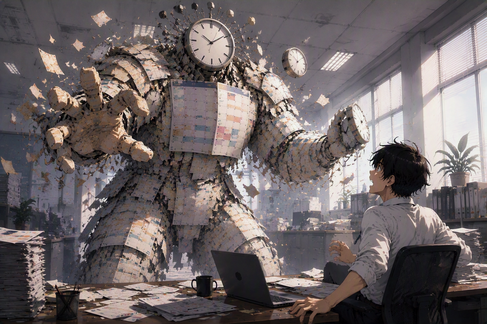
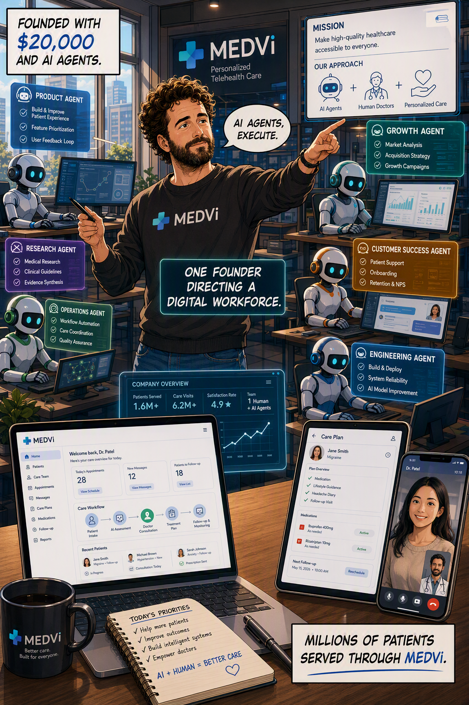
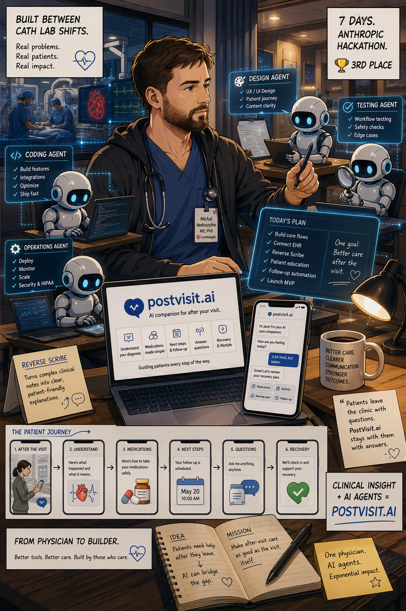

Experience Jarvis
Agents do the work. We hold the agency.
As Jarvis takes on the execution, our value moves up the stack, from doing the tasks to directing them.
🧭
Direction
We choose what matters and set the priorities.
⚖
Judgement
We make the calls that carry real weight.
🎯
Accountability
We own the outcome, from first call to last.